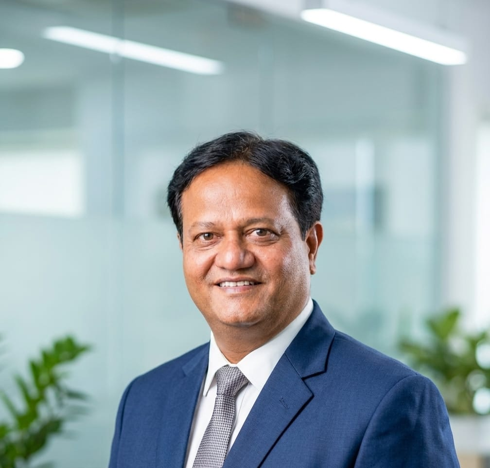
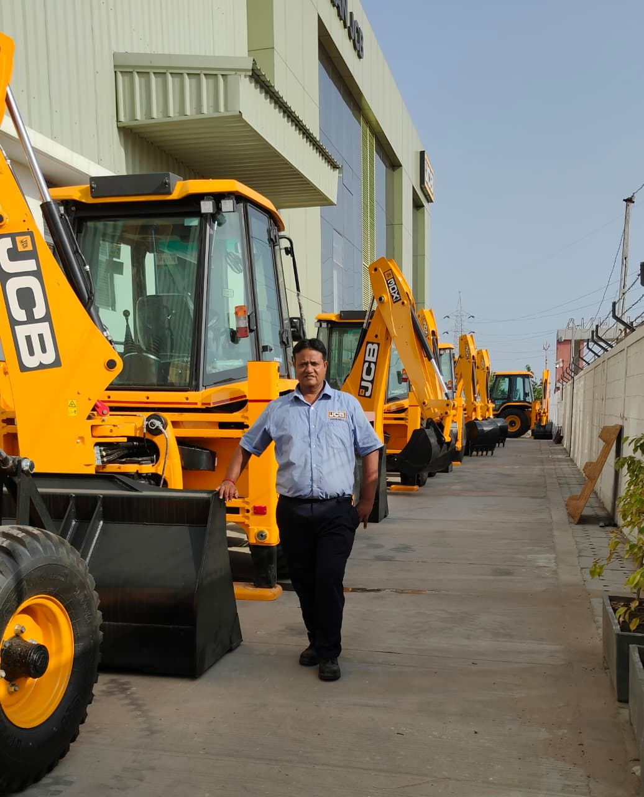

25+ Years of Experience in Earthmoving Equipment, Diesel Engine Diagnostics, Engine Overhauling, Heavy Machinery Maintenance and Field Service Operations.
Years Experience
Service Calls
Years at Yantraman
Engine Platforms

With over 25 years of experience in the earthmoving equipment industry, I have built my career around technical excellence, customer support, and practical engineering solutions. My expertise includes diesel engine diagnostics, engine overhauling, preventive maintenance, breakdown analysis, and field service operations for heavy construction equipment.
Currently serving as a Senior Service Engineer at Yantraman Automac Private Limited, an Authorized Dealer of JCB India Limited, I have extensive hands-on experience working with BS2, BS3, BS4 and BS5 engine technologies. Over the years, I have supported customers across multiple industries, helping maximize equipment reliability while minimizing downtime.
I have participated in advanced technical training programs at the national level and remain committed to continuous learning, mentoring junior engineers, and delivering dependable technical support in demanding field environments.
Advanced troubleshooting, fault identification and root-cause analysis across multiple diesel engine platforms.
Complete repair, restoration, testing and performance optimization of diesel engines.
Extensive experience servicing and maintaining construction and heavy machinery.
On-site inspections, breakdown response, repairs and technical support.
Mentoring junior engineers and sharing practical field knowledge.
Structured maintenance programs to improve reliability and reduce downtime.
Senior Service Engineer | 2006 – Present
Responsible for advanced diagnostics, engine overhauling, field service operations, customer support, preventive maintenance planning and technical problem resolution. Extensive experience with BS2, BS3, BS4 and BS5 engine technologies and earthmoving equipment systems.
Service Technician | 2000 – 2004
Performed diesel engine repairs, maintenance, troubleshooting and customer support activities while building strong technical foundations in heavy equipment service operations.

Phone: +91 9427628898
Email: nilayraval.contact@gmail.com
Location: Vadodara, Gujarat, India